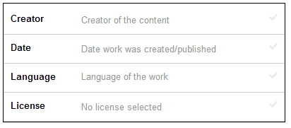

How to upload a scanned book to the Internet Archive
 Do you want to share a book you have scanned, or written, with the Internet Archive and make it free for anyone in the world to read?
Do you want to share a book you have scanned, or written, with the Internet Archive and make it free for anyone in the world to read?
Here are step by step instructions (with pictures) of how to prepare and upload your public domain book to the Archive.
For the more advanced (or more obsessed) reader, I also give "Tips" that reveal tricks for getting the most out of your uploading experience.
Update: added a quick links section for returning readers.
- Quick links
- Scan your book
- Name your book
- Describe your book
- Login to the Archive
- Upload your book
- Wait a LONG TIME
- For more information
Quick Links
If this is your first time reading this post, skip to the next section.
For returning readers, here are some quick Links you may want to refer back to later.
- Internet Archive:
- Create a new account
- Upload Files (or the older method of uploading)
- Report an error for your book
- Request your own collection,
- Find the status of all your uploads (for owner), the public list is at: http://archive.org/search.php?query=uploader:"EMAIL".
- Frequently Asked Questions and Forums: find answers to your questions.
- Archive Blog: learn about new features.
- Copyright overview: a fast and brief guide to figuring out if your book is in the public domain.
- Authority records: use shared tags from the Library of Congress.
- "site:archive.org My Book Title": search for duplicates of your book on the Internet Archive.
- Sample book: at the Archive, at Open Library
Scan your book
Before you Scan: do this first!
Before you begin to scan a book, first:
- do a Google search of the Internet Archive ("site:archive.org My Book Title") to make sure that a quality copy of your book does not already exist on the Archive;
- do a general internet search, to check that other free ebook sites don't have a copy; and
- check the copyright status of your book, to make sure that you have the right to upload it.
Choose the Resolution & Format for your page images
Whether you are scanning the book yourself, or having a company (such as BookScan.US or 1DollarScan.com) scan for you, be sure to choose a good format and quality for your images. Because a lot of photograph formats lose information, you might want to scan your images in a .TIFF format that does NOT lose information.
The general quality and formats to use for the final digital copy of your book are:
- Format: Either as (1) single ZIP file containing separate images of individual pages or as (2) a single PDF file.
- Quality: Choose the best resolution (usually 600dpi color for basic books) when scanning your pages.
Put your pages into the Correct Order
- If using a ZIP file, make sure the file names for each page are identical, except for a 3- or 4-digit number at the end of the name, which sorts them numerically.
- Example files names: Page0001.tiff, Page0002.tiff.
- On Windows, you can use a free software program (Bulk Rename Utility) to rename your files easily.
Do a Quality check on your scans
- Make sure none of your pages are missing.
- Make sure the text is not blurry or cut-off on any of your pages.
Tip: Optional image alterations
- If you set the first page image (Page0000.tiff) as the front cover and the last page image as the back cover, then people who read your book online through the Archive will experience it more like reading the original book.
- You can also electronically add a bookplate with the text "From the library of YOUR NAME" to the first blank page in the book, so that the world knows whose effort made this book freely available. Place the bookplate so that it does not hide any text, images, or handwritten notes on that page.
Name your Book
The Archive needs you to choose a name (called a "Unique Identifier"). This name will give your book it's web address (or URL) at the Archive.
Example Name
I shared a book whose title is "The doctrine of the Brethren defended" and choose the name DoctrineOfTheBrethrenDefended. This made my book's final web address become: http://archive.org/details/DoctrineOfTheBrethrenDefended
Special Requirements for ZIP files
If you chose to collect images into a ZIP file, instead of uploading a single PDF file in step 1, your ZIP file should be named: UniqueIdentifier_images.zip.Without "_images" at the end of your zip file's name, your book will not upload correctly.
Naming Requirements
The archive requires that your name be:
- UNIQUE in Archive: it cannot already be used by another book.
- URL-safe: your file name must use only letters and numbers, and cannot use spaces, but is allowed to use 3 special punctuation symbols: underscores (_), dashes(-), and dots(.).
- Less than 81 characters long: for example, DoctrineOfTheBrethrenDefended has only 29 characters.
Tip: Best practices for Naming
When choosing your name, decide on what information is most important to communicate in that name or URL that people will by typing. Some libraries, for example, use a format like this: [title:8-16][vol:2][author:4][scanninglocation:0-4]
In my humble opinion, however, your name will be easier for people to read, understand and type if you follow these principles:
- Do not use all lower case letters (as in "doctrineofthebrethrendefended"), instead use CamelCase where you capitalize the first letter of each word in your name without using any spaces (as in "DoctrineOfTheBrethrenDefended").
- If you decide to use lowercase letters, do not use underscores in your name (as in "doctrine_of_the_brethren_defended"), because these are harder to see in your web browser's address bar, and people type the underscore character less frequently. Instead, use periods (.) which are easier for people to type, or dashes (-) which are easier for people to read.
- Don't include "A", "An" or "The" at the beginning of your identifer, and leave out any similar prepositions that make your Identifier too long. For example, instead of "TheDoctrineOfTheBrethrenDefended", I would use "DoctrineOfTheBrethrenDefended" or even "BrethrenDoctrineDefended".
- Choose a name that will clearly communicate the contents of your book and distinguish it from other books. An exact copy of the title of your book will sometimes not have enough information to distinguish it from similarly-titled books. For example, I uploaded a number of books with the title of "Minister's Manual". A clearer name choice would probably include the church who created this manual (as many denominations have minister's manuals) and also the year of publication (as most denominations publish many versions of their manuals). A better name would probably be "Brethren Minister's Manual 1940" and then removing spaces and punctuation for its Archive identifier, as in "BrethrenMinistersManual1940".
Describe your Book
Now that you have a good digital copy of your book, all scanned-in and well-named, you might want to start uploading this work of art, this beautiful file. But there is one more step you need to take in preparation for uploading your book: description.
When you upload your book, the Archive will require that you enter certain information about the book, such as its title. In order to make your life easier, it helps to gather the description information for your book BEFORE attempting to upload.
Required Descriptions
The Archive requires you to enter the following information about your book:
- Page Title: Your book's FULL title and subtitle, for example "The doctrine of the Brethren defended, or, The faith and practice of the Brethren proven by the Gospel to be true (unabridged)".
- Page URL: The identifier as discussed above, for example: "DoctrineOfTheBrethrenDefended".
- Description: A summary of your book's contents, similar to the blurb you might read on the inside of a dust jacket or when you are buying books online. For example: "Early doctrinal and theological work by the German Baptist Brethren church. At 404 pages, this earlier work has more detail than later, abridged editions with only 298 pages."
- Subject Tags: Key words or phrases (with each word or phrase separated by a comma) that describe the main topics discussed by your book or areas that might find this book relevant. For example: "German Baptist Brethren,Theology,Doctrine,Genealogy".
- Collection: The broad category of "stuff" in the Archive where your book lives. For books, be sure to change the default Collection for your book to "Community Texts". Once you have enough books (at least 50), you can email the Archive to request a collection be created for your own library.
Recommended Descriptions

It is not required, but it is highly recommended that you also add the following information about your book:
- Creator: Your book's author(s). For example, "Miller, Robert Henry, 1825-1892".
- Date: The date when your book was published (or when it was created, if it is unpublished). For example, "1998-12-31" (note the year, month, day format).
- Language: The language in which your book is written. When the Archive tries to recognize the text and words within the images you upload, this will help it choose the correct language.
- License: The copyright status which applies to your book.
Tip: More Options
You can also use the "Add additional metadata" link at the bottom of the first column to enter special descriptions that either you find helpful, or that the Archive has used elsewhere as a Standard.
I discovered a lot of descriptions that are already being used on the Archive by looking underneath the "All Files" and then "HTTPS" links on books others had uploaded and finding which elements they used in their IDENTIFIER_meta.xml.
You can also add your own elements, but here are some of the most useful metadata tags I've borrowed from other uploaders:
- contributor: For example, "Adelle Frank"
- publisher: For example "Brethren Publishing House"
- location: I assume this is the Publisher's location and use a regular address format, so that it can be connected to mapping software more easily. For example "Elgin, IL, USA"
- notes: For example, "Bookplate added electronically to second page, but does not cover up any text or marks."
- call_number: I use this area to place a link to the "catalog" record I created for this book, which includes its tables of contents, at OpenLibrary.org. For example: "http://openlibrary.org/books/OL25415159M".
- possible-copyright-status: For example, "NOT_IN_COPYRIGHT"
- copyright-region: For example, "US"
- copyright-evidence: For example, "Published before 1923, published or distributed in the US."
Tip: Shared Library Names and Subjects
Libraries have ways (known as authority records) to write Subject Tags, Creators, and Publishers that make it easier to link similar books and authors and topics together. I like to use these, when possible, but also to add in other, more commonly-used words and phrases (especially to Subject Tags). For example, even though the topic of a book I upload may not include genealogy, I will often add this subject tag when this book is very useful for family history research.
Log in to your Archive account
- If you don't already have an account at the Archive, choose the "join us" link in the top right of the page, between the "Anonymous User" text and the "Upload" button.
- Choose the email address for your Archive account carefully, as it will be PUBLIC and attached to all of the books you upload.
- After you click on "Get Library Card", your new account will also allow you to check out free e-books from the Archives online library.
Upload your Book
After you log in to the Archive, click on the blue "Upload" button in the top right of the page, after the text that says " Hello YOURNAME (not you? sign in or log out)".
Then, on the next page, click on the first, green button that invites you to " Upload Files".
The new "Upload Files" button does not work with Internet Explorer, so use Chrome or Firefox instead. The older, flash-based "Classic Uploader" is still available for IE users and for those who have trouble getting the new "Upload Files" button to work, as is a non-Flash version of the Classic Uploader and also an FTP option for the truly old-school.
After you've clicked on the new, green "Upload Files" button, the next page will allow you to either drag your PDF or ZIP file into the gray area of the box, or you can click on the blue "Choose Files to upload" button in the middle of that box and browse to those files on your computer.
Once you have chosen your file, you may notice that the Archive automatically fills in the Page Title and Page URL, based on the name of the file you are uploading. However, you will usually want to change these fields to your well-thought-out choices instead.
Don't forget to change Collection from its default to "Community Texts", so that your book is not confused with movies or music.
Enter the rest of the description information that you gathered in the earlier "Describe" step of this tutorial.

Remember: only click the "Upload and Create Your Item" button when:
- you can leave your web browser open to this page for a long time (as closing this page could kill the upload)
- you are SURE that you have the right to upload a book
- you have put the correct description information in (as you won't be able to change it for a long time)
How fast your book uploads will depend partly on how fast your own internet connection is, and on how many other people are also uploading to the Archive at the same time. (If you don't care about Tips, skip to more about the Waiting Game for uploads below.)
Tip: Test an Upload first
Test Item: If you change this handy setting to "Yes", you can upload a book that will be deleted after 30 days. It's a a great way to try the Uploading process without committing irrevocably to a specific Identifier/Name.
Tip: URL to pre-set description
You can use a special URL to PRESET basic information for your book. I only recommend this if you are uploading many books, and then only for those pieces of information which will be the same for most of the books you upload.
Be aware that your pre-set information does not IMMEDIATELY show on your web browser after you copy this URL and hit Enter. You must drag a file into the uploader before your pre-set information displays. Also, you will want to double-check that all of your pre-set information is showing up correctly once you drag a file into the grey box.
The easiest way to create the special encoding for this URL is to copy it from a Google search URL.
Simple Example
There are no spaces in the actual URL you use for uploading. I added spaces before each ampersand (&) in this example, to more clearly highlight the individual pieces of information.
http://archive.org/upload?language=eng
&licenseurl=http:%2F%2Fcreativecommons.org%2Fpublicdomain%2Fmark%2F1.0%2F
&collection=opensource
&mediatype=texts
&contributor=Adelle+Frank
Complex Example
http://archive.org/upload?language=eng
&licenseurl=http:%2F%2Fcreativecommons.org%2Fpublicdomain%2Fmark%2F1.0%2F
&collection=opensource
&mediatype=texts
&contributor=Adelle+Frank
&year=1857
&date=1857
&publisher=Brethren+Publishing+House
&location=Elgin%2C+IL%2C+USA
&call_number=http:%2F%2Fopenlibrary.org%2Fbooks%2FOL0M
&subject=Worship%2CChurch+of+the+Brethren
&possible-copyright-status=NOT_IN_COPYRIGHT
©right-region=US
©right-evidence=Published+before+1923%3B+published+or+distributed+in+the+US.
¬es=Acquired+via+Some+Bookstore+in+IN%2C+USA.+Bookplate+added+electronically+to+second+page%2C+but+does+not+cover+up+any+text+or+marks.
Wait a REALLY LONG TIME
WARNING: Do not CLOSE your web page while the Upload is happening!
Immediately after you click on the "Upload and Create Your Item" button, a box pops up that says "Please wait while your page is being created", shows you a green progress bar, and lists the name of your file and number of megabytes uploaded so far. This box may remain for a LONG TIME, depending on the speed of your internet connection.
When your upload is nearly completion, that same box will have an additional message at the bottom, which says "Finishing upload...please be patient". Do NOT close this page in your web browser yet!
The Archive will next re-direct you to a page that looks like any other item or book page on the Archive site, but only shows the HTTPS format. It is now safe, if you wish, to close this page in your web browser.
After Uploading, the Archive runs a "Derive" process on your files that could take as long as a day to finish and that prevents you from editing your book. In fact, if you try to edit your book, you will get a message that says:
Your item is in the process of being derived, and you may not replace the metadata until the derive has finished (because any changes queued now would roll back those being made by the derive). Please try this page again after your item has finished deriving. [Item History]
Tip: How to find your books & their status
If you want to check on the status of your book (and whether it is finished deriving yet), you can visit the "Item History" for that particular book at: http://archive.org/catalog.php?history=1&identifier=IDENTIFIER
If you uploaded more than one book, you can check the status of all your books at: http://archive.org/catalog.php?history=1&justme=1 or via the About and then "Contributions" menu item.
Another way to determine that the Derive process is finished is on the book's Archive page, under "View the book". Instead of only HTTPS, you will now read a long list of formats that includes: Read Online, PDF, EPUB, Kindle, Daisy, Full Text, and DjVu.
By substituting the email address you used for your Archive account in between double quotes at the end of this URL, every finished book you have uploaded can be found at http://archive.org/search.php?query=uploader:"EMAIL".
For more information
- Changing your book (I'm also planning a detailed blog on this topic).
- Report an error for your book
- Uploading Content
- Adding files to the Internet Archive (WikiSource)
- Frequently Asked Questions (on Archive.org)
- Forums (on Archive.org)
- Archive Blog
- How to create an E-book (MobileRead Wiki)